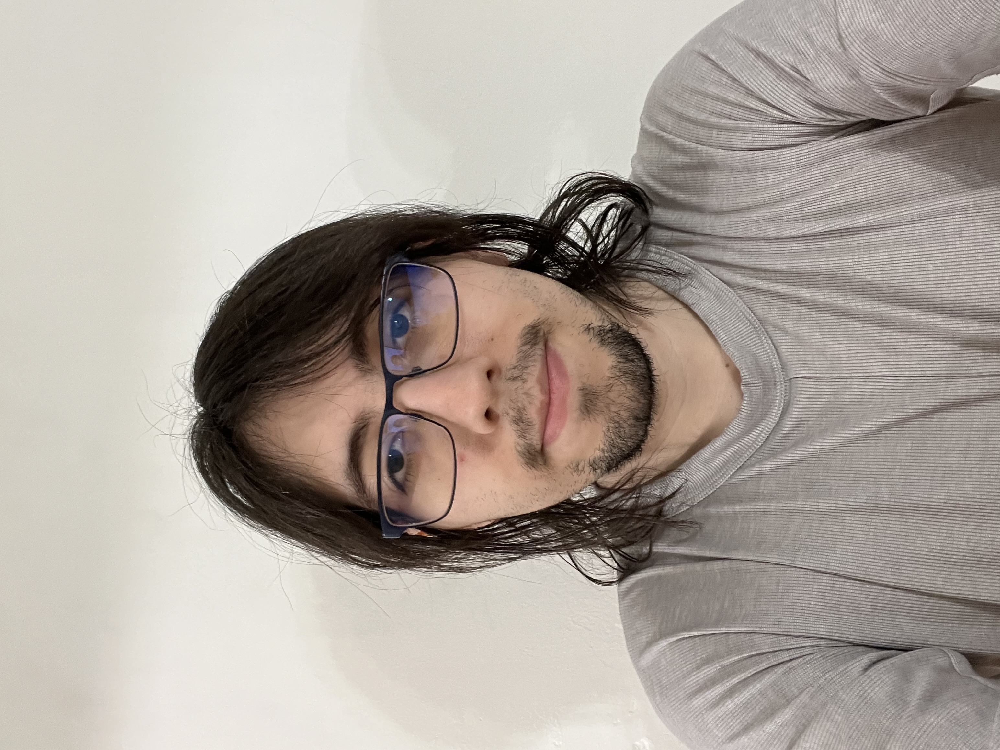

Jose Ramirez

Contact Info
Tel: 917-553-1849
Email: rosejamirez@gmail.com
Summary
I am a growing developer always ready to learn new things.
Education
- GED HIGH SCHOOL DIPLOMA - New York, NY (Graduated 2015)
- Attended Hunter College for BA in Computer Science (2022 - Transferred out)
- Bachelor of Arts, Computer Science (IN PROGRESS) - Boston Univesity (2023-present)
Work Experience
Internships
Assistant - Holographic Studios
September 2013 - February 2014
- Maintained and repaired various pieces of equipment for Holographic film, increasing the reliability of the equipment
- Performed precise calibration of lasers which was measured down to the molecular level, allowing consistency in the fabrication of a hologram
Tour Director - Holographic Studios
June 2014 - October 2014
- Interacted with various customers daily by answering questions, showing sample holograms, explaining equipment, and selling Holograms
- • Performed tours of the Studio, explaining the origin of the technology and demonstrating how all the holograms are made, increasing interest in the product
Project Assistant - The Skin Deep
February 2015 - June 2015
- Contributed in the expansion of an interactive documentary named THE{}AND, by providing a younger perspective
- Sorted thousands of files for the company allowing for easy access to them in the future
- Contributed to the conception of future projects in the company, such as a sellable card game for more interactivity with their digital content
- Researched social media marketing, which was then used for ideas on how to grow the brand
Jobs
Barista - Starbucks
August 2017 - April 2018